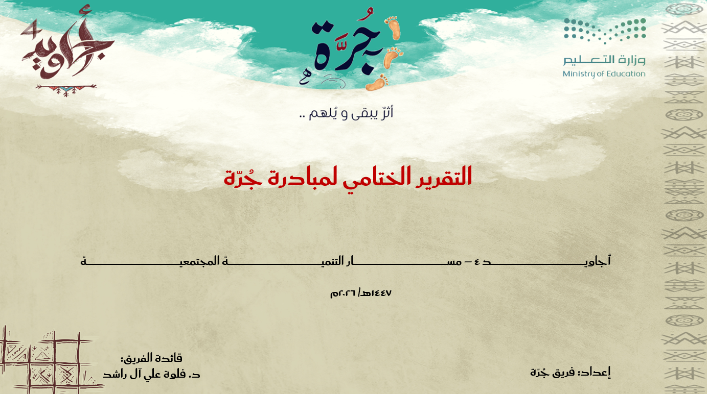
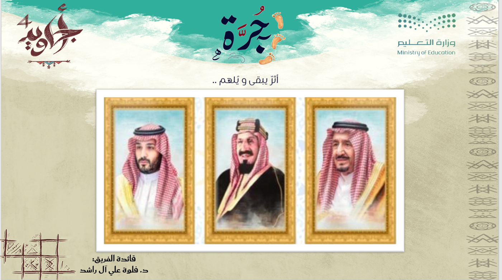
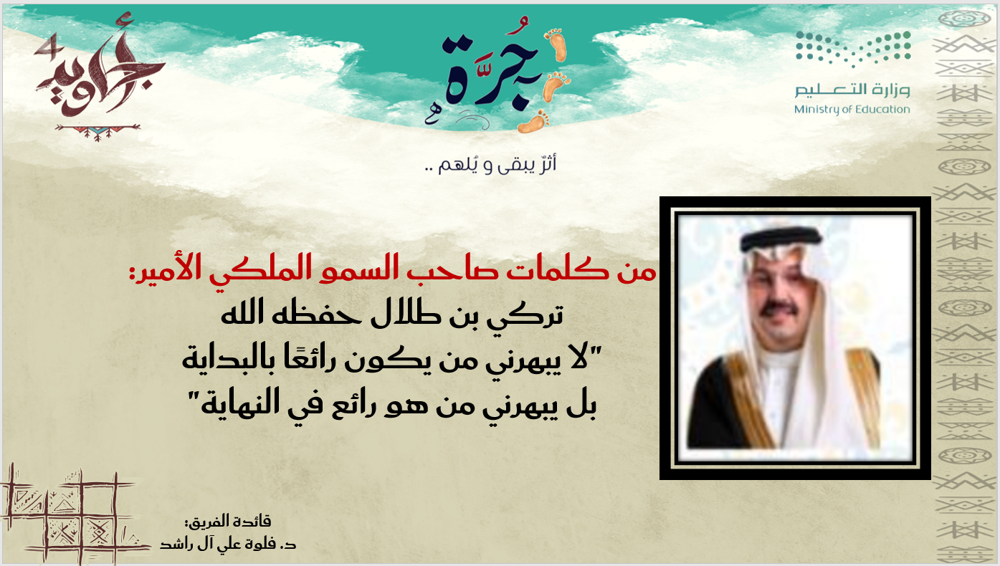

١




« جُرّة: تجسيدٌ للقيم، وانطلاقةٌ نحو الأثر. »
| القسم | الوصف | الرابط |
|---|---|---|
| الهوية | من فلسفتنا أن التعليم بصمةٌ لا تمحوها الأيام، وهويتنا تجسيدٌ لممارساتٍ مُلهمةٍ تجاوزت جدران الصفوف المدرسية؛ لتسكن وجدان المجتمع، وتصنع فصلًا جديدًا من الإبداع المستدام. | فتح ملف الهوية |
« رسم المسارات: حيث تلتقي الرؤية بالمنهجية. »
| القسم | الوصف | الرابط |
|---|---|---|
| التخطيط | من أهدافنا بناء الخطة الاستراتيجية لمبادرة جُرّة وفق منهجية واضحة تضمن تكامل الجهود، واستثمار الموارد، وتحقيق النتائج المستهدفة بكل كفاءة وفاعلية وفق الزمن المحدد. | فتح ملف التخطيط |
“بناء القدرات: استثمارٌ في الإنسان، لتمكين المجتمع.”
| القسم | الوصف | الرابط |
|---|---|---|
| التدريب | من اهتماماتنا بناء القدرات البشرية لإعداد المشاركين ليكونوا عناصر فاعلة في نقل التجربة واستمرارها، وتأهيل فرق العمل والمتطوعين لصناعة سفراء للمبادرة، وتمكينهم من التطوير. | فتح ملف التدريب |
“جسورٌ من التفاعل: لإيصال رسالتنا بكل فخرٍ ووضوح.”
| القسم | الوصف | الرابط |
|---|---|---|
| الإعلام | من أولوياتنا الاهتمام بالتواصل المجتمعي والإعلامي للتعريف بمبادرة جُرَّة ونشر أهدافها، وإبراز منجزاتها عبر القنوات الفاعلة والمتنوعة، بهدف تعزيز التواصل، ودعم التفاعل المجتمعي النوعي. | فتح ملف الإعلام |
“استباق التحديات: مرونةٌ تضمن استمرارية النجاح.”
| القسم | الوصف | الرابط |
|---|---|---|
| إدارة المخاطر | من منهجيتنا العمل على إدارة المخاطر لتعزيز المرونة التشغيلية، وحماية مكتسبات المبادرة، لضمان الاستغلال الكفء للموارد، مما يسهم في تجاوز التحديات دون التأثير على جودة المخرجات. | فتح ملف إدارة المخاطر |
“بصمة جُرَّة: أثرٌ مستدام يلامس حياة المجتمع.”
| القسم | الوصف | الرابط |
|---|---|---|
| الأثر | من مبادئنا بناء القدرات المستدامة حيث تمثل مبادرة جُرَّة حجر الزاوية في نقل الأثر من مرحلة العطاء المباشر إلى مرحلة التمكين الفاعل للموهبة لترجمتها في صورة أثر مجتمعي ملموس. | فتح ملف الأثر |
“آفاقٌ متجددة: نحو مستقبلٍ يبني ولا ينتهي.”
| القسم | الوصف | الرابط |
|---|---|---|
| الاستدامة | من مرتكزاتنا في مبادرة جُرَّة الانتقال من مفهوم الحدث المؤقت إلى منظومة تنموية مستمرة، تركز على استمرار الأثر التعليمي، والمجتمعي على المدى الطويل لضمان استدامة الأثر الفاعل. | فتح ملف الاستدامة |
“التوثيق الداعم: شواهد من رحلة العطاء.”
| القسم | الوصف | الرابط |
|---|---|---|
| الملاحق | من دوافعنا لاستكمال رحلة مبادرة جُرَّة حفظ تفاصيل الأثر، وتوثيق الخطوات الإجرائية التي شكّلت قوام هذا العمل، نستعرض في هذا القسم ملاحق التقرير الختامي. | فتح ملف الملاحق |